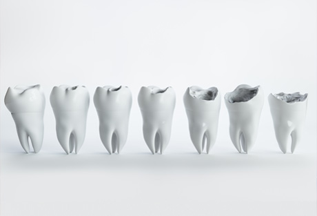
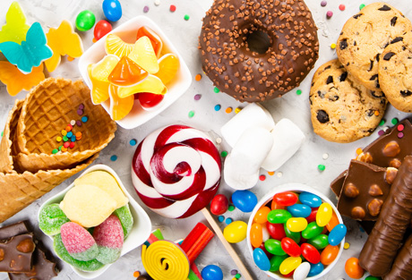
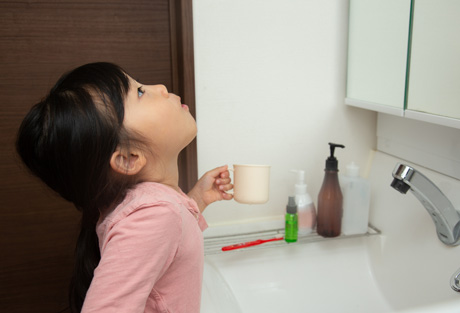
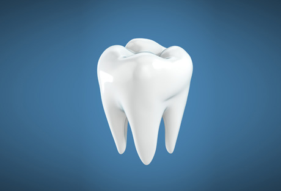
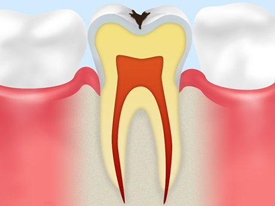
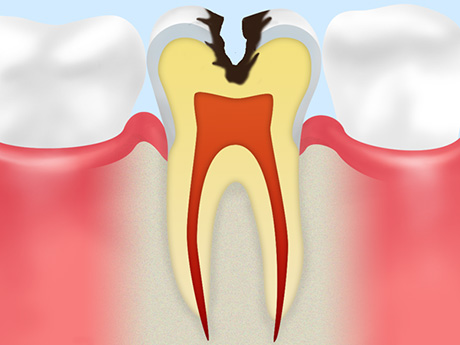
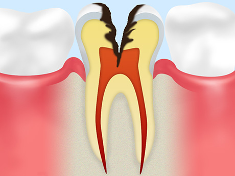
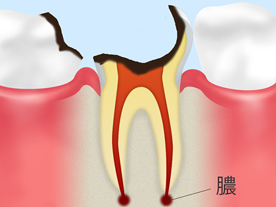
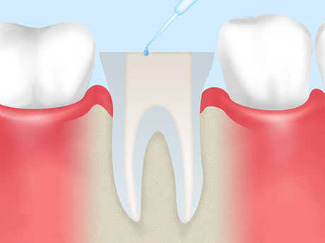
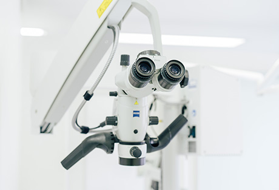

むし歯は「早めの治療」が大切です
むし歯はとても身近な病気ですが、悪化すれば歯を失ってしまいます。決して軽く見てはいけません。こちらでは町田市の歯医者「ワイズデンタルオフィス」が、むし歯治療および根管（こんかん）治療についてご紹介します。「むし歯かも」と思う症状があれば、お早めにご相談ください。

歯の痛みは早急に対処しましょう
むし歯は、「歯が痛い」「冷たい物がしみる」といった症状で気づくことが多い病気。しかしそういった症状が現れたときには、すでにかなり進行している可能性があります。早期に対応できれば簡単な治療で終えられますので、異変に気づいたらすぐにご相談ください。
むし歯になる4つの原因
- 原因01：細菌
- むし歯は、「むし歯菌」と呼ばれるミュータンス菌などの細菌が原因で発症します。お口の中は適度な湿度・温度である上、暗くエサがあることから、むし歯菌が好む環境だといえます。とくにプラーク（歯垢）が溜まるとむし歯菌が繁殖しやすくなるため、予防するにはきちんとブラッシングすることが大切です。
- 原因02：糖分
- 
-
むし歯菌は食べ物に含まれている糖分をエサにして酸を出し、歯を溶かしていきます。これがむし歯の始まりです。つまりお口の中に糖分を残さないことが、むし歯予防では大切です。
とくに自分できちんとブラッシングできないお子様には、甘いお菓子やジュースなどを与えすぎないよう注意しましょう。
- 原因03：時間
- 
- むし歯は、お口の中が汚れている時間（糖分がある時間）が長いと進行しやすくなります。そのため、食後にはブラッシングすることが大切です。お昼寝の時間がある小さなお子様などで、毎回のブラッシングが難しい場合には、お茶でお口の中をうがいするだけでも予防につながります。
- 原因04：歯質
- 
-
食事をすると歯の表面を覆うエナメル質が溶け出す「脱灰（だっかい）」が起きますが、時間が経つと「再石灰化」により溶け出したものが歯に戻り修復されます。
この脱灰と再石灰化のサイクルが崩れるとむし歯になりやすくなるのですが、歯質により再石灰化の力が弱いこともあります。歯質の強さは遺伝によるものも多いため注意が必要です。
むし歯の進行と治療法
| C0 ごく初期のむし歯 | |
|---|---|
| 歯の表面のエナメル質がわずかに溶け、白濁します。まだ穴も開いておらず、痛みなどの自覚症状もありません。適切なブラッシングやフッ素塗布などによって、治癒が見込める段階です。 | |
| C1 エナメル質のむし歯 | |
|  | エナメル質がさらに溶けて黒ずみ、冷たいものがしみることがあります。むし歯菌に冒された歯質を削り、レジン（歯科用プラスチック）で補う治療を行います。 |
| C2 象牙質のむし歯 | |
|  | エナメル質の内側にある象牙質まで進行したむし歯です。冷たいものだけでなく甘いものもしみるようになり、ときどき痛みも発生します。むし歯菌に冒された歯質を削り、詰め物または被せ物で補う治療を行います。 |
| C3 神経に達したむし歯 | |
|  | 象牙質のさらに奥の、歯根にある神経まで達したむし歯です。この状態になると、何もしなくてもズキズキと痛むように。歯根の中からむし歯菌に冒された神経・血管を取り除き、内部を洗浄・消毒して薬剤を充填する「根管（こんかん）治療」を行い、被せ物で補います。 |
| C4 歯根に達したむし歯 | |
|  | 歯冠部分がほとんど溶かされ、歯根まで達したむし歯です。神経が死んで一旦痛みはなくなりますが、歯根の先に膿が溜まると再び強い痛みが現れます。ここまで進行するとほとんどの場合抜歯となり、その後は入れ歯・ブリッジ・インプラントなどで歯の機能回復をはかります。 |
重度のむし歯には根管治療を
むし歯が悪化して歯根まで達すると、その中の根管（こんかん）にある神経・血管は死んでしまいます。そこまで進行したむし歯は、従来であれば抜くしかありませんでした。しかし近年では、根管治療によって歯を残せるようになりました。

根管治療とは、根管の中から死んでしまった神経・血管を取り除き、内部をきれいに洗浄・消毒して薬剤を充填する治療です。根管は人によって長さや形状が異なるため、根管治療には精密性が求められます。
当院では根管治療にマイクロスコープ（歯科用顕微鏡）を用い、根管をしっかり確認しながら治療します。さらに根管内に細菌が入らないよう、歯のまわりを覆うラバーダム防湿を使用しています。安全を確保した上で、精密な根管治療を実施していますので、どうぞご安心ください。
できるだけ歯を残すために
～当院ではマイクロスコープを用いた精密な根管治療を行っています～

根管治療は、行う歯科医師の治療技術や設備、診断の正確さなどによって成功率が左右される難しい治療です。そのため再治療が必要になるケースも少なくありません。しかし、何より1回目の治療がとても重要です。
当院では治療の成功率を高めるため、「歯科用CTを用いた正確な診断」「ラバーダム防湿による根管内の感染防止対策」「マイクロスコープを活用した精密な処置」「MTAセメントによる薬剤充填」などにより、“再発しない根管治療”を実現します。
根管治療を成功させ、大切な歯を残すために。どうぞ当院にお任せください。
むし歯・歯周病にならないために「予防歯科・定期検診」